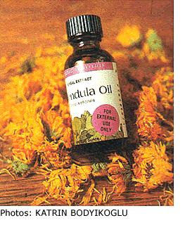
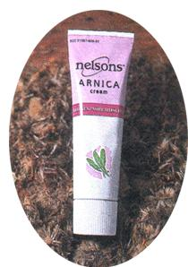

HERBAL REMEDIES
Herbal fixes for black 'n' blues.
Amazing Arnica
-----------------
Arnica is a native plant of Europe but was imported to America, where it now grows wild, particularly in moist soil conditions in mountains and valleys, at elevations ranging from 3,500 to 10,000 feet. It resembles many other members of the Composite family, with yellow range sunflower-like blossoms that bloom from April through September. Preparations of arnica were listed in the United States Pharmacopoeia (the official listing of approved drugs in the U.S.) from the early 1800s to 1960.
Two common names for arnica are mountain tobacco and leopard's bane, the latter a reference to the herb's toxicity to some beasts. It can be fatal to humans if taken internally, so all of the safe preparations containing arnica are intended for external use only .
There are three ways to use arnica topically: in a fluid extract, as a tea bath and as an ointment. To prepare a fluid extract, measure out six ounces of powdered arnica flowers, available from herbal suppliers or at some health food stores, and add to a glass jar containing eight ounces of grain alcohol, which can be purchased from any distributor of alcoholic beverages. It should be 90% strength (180 proof). Mix well by stirring constantly for about ten minutes, screw a cap on the jar and allow the mixture to set overnight. This allows the arnica flowers to dissolve more completely in the alcohol. The next day, strain the mixture using cheesecloth as a filter. Bottle the resulting fluid and label. While this is not a pharmaceutical grade tincture of arnica, it is very effective as a preparation for taking the extreme soreness out of bruises.
An arnica tea may be made in even simpler fashion by placing a tablespoon of the powdered arnica flowers in a cup of boiling water and allowing it to steep for ten minutes. Use a cheese cloth to filter the undissolved powder; the remaining warm solution of arnica tea may be applied to the bruised area. An arnica ointment is also available for purchase at many herbal outlets and natural food stores.
Calendula Cure-all
-----------------
Calendula, or marigold, is a common annual found in many backyard flower gardens. But even those familiar with this plant may not know of its age-old reputation as a healing agent for bruises. In fact, its use among Native Americans dates back several centuries.
Like arnica, calendula is intended for external use only and should not be swallowed. It can be used in various forms as a fluid extract, tea bath, oil or ointment. Each form has its advantages, depending on the type of bruise or injury and your preferred mode of administration.
You can make a homemade fluid extract of calendula by using six ounces of dried marigold flower petals to eight ounces of 180-proof grain alcohol. Follow the same procedure described for the arnica fluid extract.
A calendula tea bath can also be made in similar fashion to the arnica tea bath and applied as a warm solution to bruises as needed.
The ointment and oil forms can be purchased from herbal stores. Calendula ointment has the advantage of being easy to apply. Plus, not only does it take the soreness out of bruises, it also penetrates through skin layers to start the healing process.
While calendula oil similarly possesses healing emollients, it doesn't always have the staying power of the ointment, which tends to stick to the skin better. However, you can use calendula oil as a topical skin treatment just as you would the ointment. And because it is a liquid, you can pour it into cuts that can't handle the rubbing friction that necessarily comes with applying an ointment. Some of the commercially made preparations use a combination base that includes mineral oil.
Dr. Dickson is the author of the book,
Investigations in Pharmaceutical and Biological Chemistry (CRC Press, 1998).
|
 |
|
 |